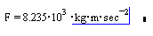
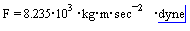
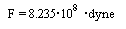

Unit Conversions |
Your worksheet automatically displays results in terms of the fundamental units for the unit system you've chosen. If you have selected Simplify Units from the Result Format dialog, results display in terms of the simplification rules for your unit system. You can re-display a particular result in terms of any other built-in or worksheet-defined unit.
The example below shows how to convert a single result into other units:
Click in the result to see the unit placeholder.

Click on the unit placeholder and type any combination of units, or choose Unit from the Insert menu and click on a unit from the list.

Click outside the expression to re-display the result in terms of the new units.

The units placeholder can accept any Mathcad expression, so you can, for example, express results in terms of π, or a predefined variable name, as well as any dimensioned value. You can define your own units for use in this placeholder. Units are balanced automatically, so any remaining terms not accounted for by values in the placeholder continue to display next to the result.
The units placeholder can also accept "unit functions." When you define a value, the unit function is applied to the value. When you scale a result using the units placeholder, the inverse function is applied. Unit functions, such as the Celsius and Fahrenheit temperature scales, scale results non-multiplicatively. You can use any function which has an inverse defined in Mathcad using / notation in this placeholder. Several common inverse pairs are built-in, but you can also define your own, such as dB, in the worksheet.